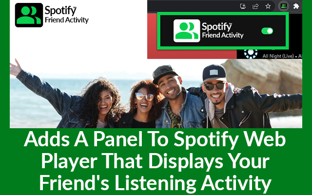

Have you ever wanted to tune into what your friends say on Spotify? The Spotify Friend Activity extension enhances your Spotify Web Player, adding a new layer of social interaction. This smart extension creates a panel that reveals your friends' real-time listening activities, giving you a front-row seat to their musical adventures. However, before you dive in, there are a few things you need to check off the list to enjoy this feature fully. Ensure you're following the Spotify users whose activities you want to track. Your friends must be active on either the Spotify Web Player or the desktop app, having logged in at least once within the past week. Crucially, the "Share my listening activity on Spotify" setting must be turned on. Once you've sorted these prerequisites, you can dive into the Spotify Friend Activity Chrome extension. Are you eager to get started? Read on for a detailed, step-by-step guide on how to install this extension. Prepare to connect with your friends in a whole new way through the world of music!
